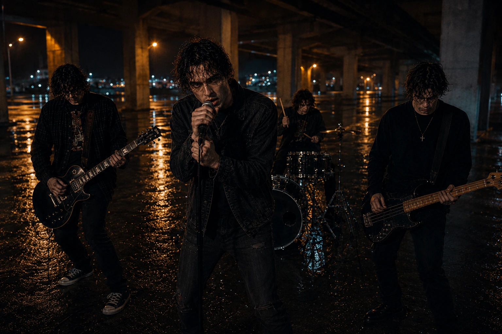

The Short Version
“Sarah” by Dirty It Dies started with a song that already felt visual.
It had that emotional alternative-rock energy where the music feels personal, heavy, and just a little messy in the best possible way. I did not want the video to feel like a random collection of AI-generated shots placed over the track. I wanted it to feel like the song had its own world.
The finished video came together through a mix of AI-generated imagery, character development, image-to-video animation, performance shots, and traditional editing.
The AI tools helped create the raw material, but the larger job was still directing the video: deciding what the character looked like, how the locations felt, when to show the band, how the camera should move, and which images actually matched the emotion of the song.
Starting With the Song
Before creating any images, I listened for the emotional shape of the track.
A music video does not always need to explain every lyric literally. Sometimes it works better when the images capture the same feeling instead of acting out every line like a very dramatic PowerPoint presentation.
“Sarah” felt lonely, restless, and emotionally charged.
That pushed the visuals toward wet streets, cold city light, empty public spaces, dark clothing, orange streetlamps, and reflections across the pavement. The environments needed to feel real enough to be familiar but stylized enough to feel like they belonged inside the song.
The lead character became the visual anchor.
Once his appearance, clothing, hair, and emotional tone were established, the rest of the video could grow around him.
Building a Consistent Lead Character
Character consistency is still one of the hardest parts of making an AI music video.
It is easy to generate one strong portrait.
It is much harder to create the same person sitting on a bench, standing in the rain, looking toward the camera, singing with a band, and appearing in different lighting without slowly transforming into a distant cousin.
For Sarah, the lead singer needed a recognizable look that could survive multiple scenes.
His dark, wet hair, black denim clothing, tired expression, and slightly worn alternative-rock appearance became part of the visual language of the video.
The strongest images were not necessarily the most polished or glamorous. They were the ones where the expression felt honest.
A small shift in the eyes or posture could change the entire shot. Looking downward created exhaustion. Looking away from the camera suggested distance. Looking directly toward the viewer created something more confrontational.
Those details mattered because the video needed the character to feel emotionally present, not simply posed.
Creating the World Around Him
The environments were designed to support the character without overpowering him.
The park bench scene gave the video a quieter, more isolated moment.
The wet streets added movement through reflections, headlights, and city lights.
The underpass performance location gave the band scenes a raw, industrial energy that matched Dirty It Dies.
Lighting became one of the most important tools in keeping the scenes connected.
Warm orange streetlights were used against cooler blue and gray surroundings. That contrast helped create a consistent night-world across different locations.
The rain and wet pavement also helped visually connect everything. Reflections gave the frames more depth and made even simple backgrounds feel cinematic.
The goal was not to make every image dark just because the song was emotional.
The goal was to make the darkness feel intentional.

Making the Band Feel Like a Real Band
The full-band images were a different challenge.
A single character already gives AI plenty of opportunities to invent extra fingers, unusual instruments, or clothing changes. A full rock band multiplies the chaos by four and hands one of them a drum kit.
The performance shots needed to show the lead singer, guitarist, bassist, and drummer clearly while keeping the same gritty visual identity as the rest of the video.
The underpass location worked well because it gave the band a believable performance space without feeling like a polished concert stage.
The wet concrete, industrial columns, distant city lights, and hard overhead lighting made the scene feel like something happening after midnight when nobody else was supposed to be there.
These shots also gave the video a useful change of energy.
The quieter character scenes carry the emotional side of the song. The band performances release some of that tension.
Moving between those two kinds of images helped the video feel more dynamic.
Turning Still Images Into Motion
A strong still image is only the beginning.
Once an image is animated, every weakness becomes much easier to see.
Faces can drift.
Hair can change.
Hands can suddenly become deeply philosophical about how many fingers they require.
Background objects may move even when they were supposed to remain still.
For this video, controlled movement worked better than asking for too much action in every shot.
Slow camera pushes, subtle head movement, breathing, rain, distant traffic, and restrained performance motion gave the images life without destroying the composition.
The most successful shots usually had one clear action.
A character looking up.
A small camera move toward the singer.
The band performing under the lights.
Rain falling through the frame.
Trying to make everything move at once usually created more problems than it solved.
Editing to Emotion, Not Just the Beat
Music videos obviously need rhythm, but cutting on every beat can become predictable very quickly.
I wanted the editing to follow the emotional changes in the song as much as the percussion.
Some shots needed to hold longer so the expression could register.
Others needed quicker cuts as the track gained intensity.
The transitions between close-ups, environmental shots, and band performances helped control that pacing.
The edit is also where the generated material finally became one piece.
Before editing, everything existed as separate images and clips.
Once the shots were timed to the music, color-balanced, arranged, and refined, the video began to feel like it had always belonged to the song.
That is one of my favorite parts of the process.
It is the moment when a folder full of experiments finally starts acting like a music video.
What I Learned
The biggest lesson from Sarah was that visual consistency matters more than visual complexity.
A simpler shot that clearly belongs in the same world is more valuable than an incredible image that feels like it wandered in from another project.
The video also reinforced how important character reference images are.
Once the lead singer's look was established, every later generation had something specific to aim for.
I also found that AI works best when I treat it like part of a larger production pipeline instead of expecting one prompt to produce the final answer.
Generate.
Review.
Adjust.
Animate.
Edit.
Throw away the shot that looked incredible until the character developed a second elbow.
Repeat.
The technology speeds up experimentation, but the creative direction still holds everything together.
Watch “Sarah”
The finished video combines the emotional story, the nighttime environments, and the full-band performance into one visual interpretation of the song.
You can watch it here: Watch “Sarah” by Dirty It DiesWatch “Sarah” by Dirty It Dies
You can also find more music and visual releases through Jason Arts Records Jason Arts Records.
Jason Arts Records.
Final Thoughts
Making Sarah was a good example of why I enjoy AI-assisted music videos.
They sit somewhere between filmmaking, photography, design, animation, and editing.
Every project becomes a small world-building exercise.
The tools can create images that would have required a full crew, actors, locations, lighting, and a rain machine determined to ruin everyone's evening.
But the tools do not automatically create meaning.
That still comes from choosing the right expression, the right location, the right cut, and the right moment to let the image sit with the music.
That is what turned Sarah from a collection of generated shots into a finished Dirty It Dies music video.